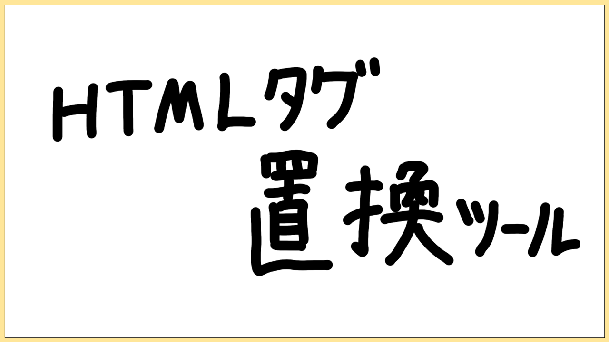

ゲーム集
パーティー

罠かけ単語ゲーム
| 対応機種 | PC、スマートフォン |
|---|---|
| ジャンル | パーティー |
| 人数 | 二人用 |
ゲーム概要
罠、それは掛かると嬉しいもの。罠、それは掛かると悲しいもの。相反する二つの感情を分けるのは、仕掛ける側か仕掛けられる側かという立場の違いである……
出題者と解答者に分かれて二人で行うゲーム。お題を決め、出題者はお題に関する罠となる単語を設定し、解答者はそれを避けるようにお題に関する5つの単語を入力する。
罠にかかれば出題者の勝利、罠を避ければ解答者の勝利となる。
ツール集

HTMLタグ置換ツール
| 対応機種 | PC |
|---|---|
| ジャンル | ツール |
| 人数 | 一人用 |
ツール概要
HTMLのタグを置換することができるツールです。
一度の入力で二つまで置換することが可能です。
mark要素をstrong要素に一括で変換したいときなどにお使いください。
テスト
テスト
概要
現在開発中のゲームのテストページです。
現在はマス目を移動するだけのシンプルなものになっています。
テスト2
テスト2
概要
現在開発中のゲームのテストページ、その２です。
枠の中を縦横自由に移動できます。
タイピングゲーム（テスト）
タイピングゲーム（テスト）
概要
タイピングゲームのテストページです。
特徴として、変換まで含めて単語を入力しなければなりません。